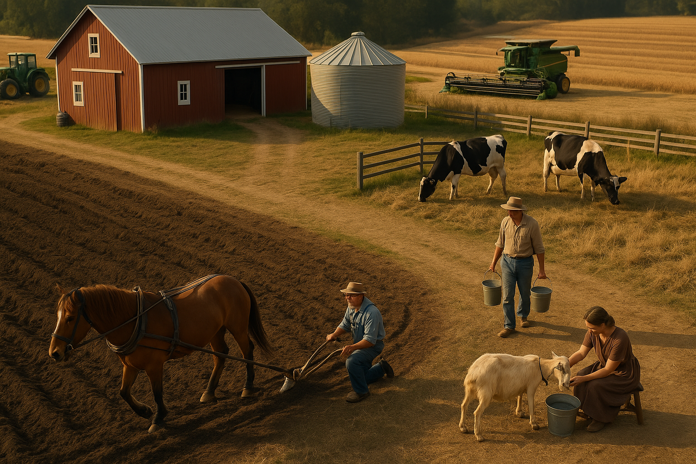

Från häst till självkörande traktor
Resan – från häst till självkörande traktor
För att beskriva vår digitaliseringsresa inom Sektor Välfärd använder jag ofta jordbruket som metafor. Vi har rört oss från manuella processer och pappersrutiner – från att "plöja med häst" – till en smartare, mer automatiserad verksamhet där tekniken verkligen gör skillnad. API:er och digitala verktyg har funnits länge, men hos oss har de i flera fall stått oanvända – som en självkörande traktor parkerad bredvid den åker vi fortfarande plöjer med häst.
Mitt arbete har varit att ta dessa outnyttjade verktyg i bruk och skapa värde av dem. Jag har kopplat ihop system, skapat broar mellan dataflöden och byggt upp en hållbar struktur för framtiden. Det handlar inte bara om att lägga till nya, smarta funktioner – utan också om att våga rensa bort gammalt. Jag ser över vilka moduler som faktiskt används, vad som tillför värde och vad som bara står i vägen. Det blir kvalitetssäkert, frigör effektiv arbetstid, minskar kostnader och ökar tydligheten.
Vi går också från föråldrade skrivbordsapplikationer till moderna, webbaserade lösningar. Det är framtiden: dynamiskt, användarvänligt och tillgängligt där användaren befinner sig – på kontoret, i mobilen eller ute hos omsorgstagaren.
Automatisering är inte till för att ersätta människor – tvärtom. Tekniken frigör tid, minskar överbelastning och gör det möjligt för personalen att fokusera på det som bara människor kan göra: ge god omsorg. Med det nya vi bygger nu blir det lättare att göra rätt, svårare att göra fel – och risken för misstag, stress och sjukskrivningar minskar.
Målet är inte digitalisering för digitaliseringens skull – utan att skapa verklig nytta för både personal och omsorgstagare. Tekniken ska vara ett stöd, inte ett hinder. Och när den används rätt frigör den tid till det som är viktigast: människor.
